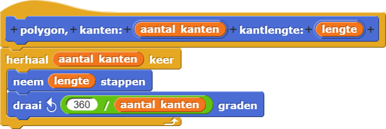
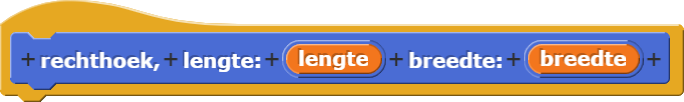
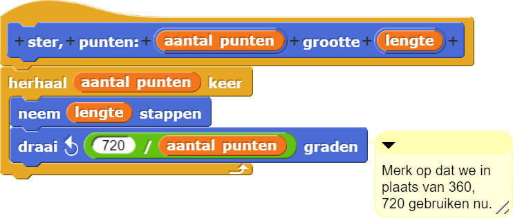

Graphics en Kunst
Op deze pagina, Ga je blokken maken en gebruiken waarmee je polygonen, cirkels en sterren kan tekenen om kunst en grafische vormgeving te verkennen.


- Als je het nog niet gedaan hebt, bouw een blok om een normale polygoon te tekenen met een bepaald
aantal kanten en een bepaalde kantlengte.
 - Je wil misschien ook een eigen blok maken om een rechthoek te tekenen met een bepaalde lengte en
breedte. Kijk naar de animatie hieronder om te leren problemen te debuggen met behulp van
zeg gedurende.
 - Plaats in het werkblad een verzameling van blokken en tools die misschien van pas komen om je
kunstwerk te maken. Je kan de invoerwaardes van deze blokken aanpassen naar wat je nodig hebt
terwijl je je kunst maakt. Deze video laat je zien hoe je overlappende gebieden maakt en daarna met
een kleur vult.
- Maak je eigen kunst. Probeer verschillende combinaties van vormen en kleuren. Maak een screenshot van je kunstwerk en deel het met de klas, misschien op een klassenpagina, als je klas die heeft.
Debuggen met
Je kan zeg gedurende gebruiken om informatie over de staat van je programma te
krijgen terwijl het uitgevoerd wordt. Deze animatie laat je zien hoe je zeg
gedurende moet gebruiken om het probleem te begrijpen in je buggy code om een
rechthoek te tekenen. Je kan zien dat het zorgt dat het programma pauzeert en je informatie
geeft om de oorsprong van de fout te helpen vinden.
 met een ander paar.
met een ander paar.
Als je een eigenschap of een stuk code ziet dat je leuk vindt, bouw dan iets wat
erop lijkt in je eigen programma.
- Zoek de werken op van kunstenaars zoals Josef Albers,
Maya Hayuk, Vassily
Kandinsky, Atta Kwami, Kazimir
Malevich, Carlos Merida, Piet Mondrian,
Alma Thomas, en
Theo van
Doesburg om inspiratie op te doen om nieuwe kunst te creeëren in je eigen stijl.


- Hieronder zijn een paar andere ideeën die willekeur, kleur en andere artistieke elementen
gebruiken. Maak je eigen kunst die willekeur op een bepaalde manier gebruiken.
Hier is een manier om willekeur aan je kunst toe te voegen:


- Je kan je polygoonblok aanpassen om sterren te maken die je in je kunstwerk kan gebruiken.

- Gebruik wat je al weet om een vlag te tekenen die je mooi vindt.

- Experimenteer met twee soorten zeven-puntige sterren


- Probeer erachter te komen hoe je het
sterblok kan aanpassen zodat het allebei de soorten kan tekenen. (Je moet hiervoor nog een invoer toevoegen.) - Is er een derde soort zeven-puntige ster? Waarom of waarom niet? Bespreek het met je partner en misschien met een ander paar.
- Hoeveel soorten negen-puntige sterren kan je maken? Teken ze allemaal met je
sterblok. - Hoeveel soorten zes-puntige sterren zijn er? Teken een zes-puntige ster op papier, probeer
het daarna met je
sterblok. Leg het resultaat uit. - Hoeveel soorten acht-puntige sterren kan je maken?
- Werk met je partner om een algemene stertheorie te bedenken, zodat je het aantal soorten 98-puntige sterren kan voorspellen zonder dat je ze allemaal hoeft te tekenen.
- Probeer erachter te komen hoe je het